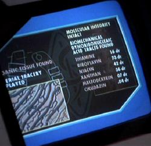

Babylon 5 |
Al di là delle voci su «chi abbia copiato da chi» che hanno avvolto il lancio di Babylon 5 e di Deep Space Nine, in Babylon 5 si trovano piccoli omaggi a Star Trek, comprese alcune occorrenze di 47, per le quali non si può sapere se siano intenzionali o casuali.
| In Infection lo scanner del dottor Franklin analizza un manufatto alieno e una delle schermate del computer riporta la presenza di Okudazin, un omaggio a Mike Okuda. |  |
| In A Voice In The Wilderness, Part II, in cui viene descritta una Grande Macchina (un computer grande come un pianeta), una nave aliena esamina i file linguistici di Babylon 5 e, tra le varie schermate, c'è quella riportata a destra. Orak, Forbin e Skynet sono riferimenti ad altre serie, Nomad è la sonda spaziale di The Changeling. |
 |